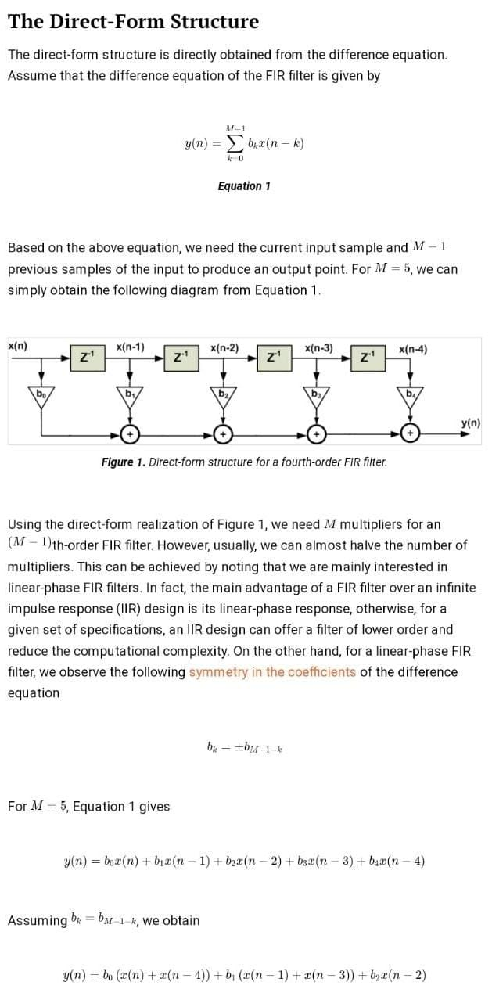

DIRECTFORM REALIZATION OF FIR SYSTEM:
THEORY:
For a FIR design, we have a couple of options such as the windowing method, the frequency sampling method, and more. Then, we need to choose a realization structure for the obtained system function. In other words, there are several structures which exhibit the same system function H(z) . One consideration for choosing the appropriate structure is the sensitivity to coefficient quantization. Since a digital filter uses a finite number of bits to represent signals and coefficients, we need structures which can somehow retain the target filter specifications even after quantizing the coefficients. In addition, sometimes we observe that a particular structure can dramatically reduce the computational complexity of the system.
a0 +a2 Z-1+ a2 Z-2 +a3 Z-3